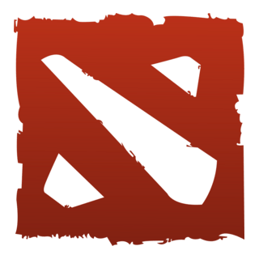
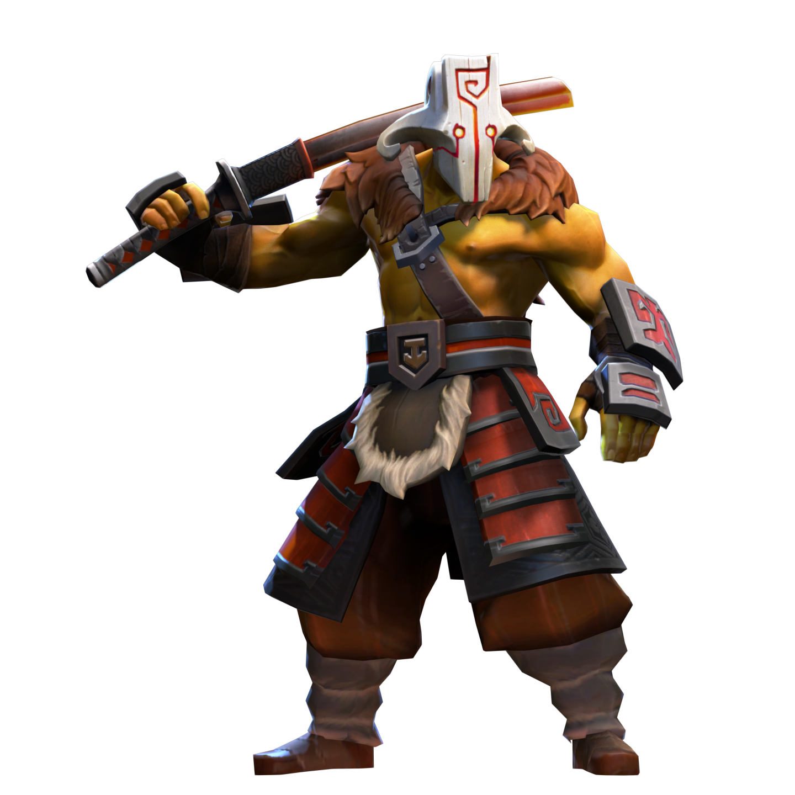
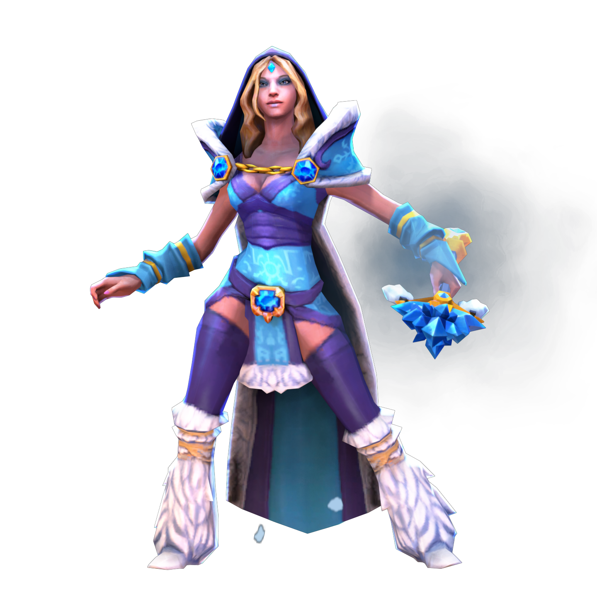
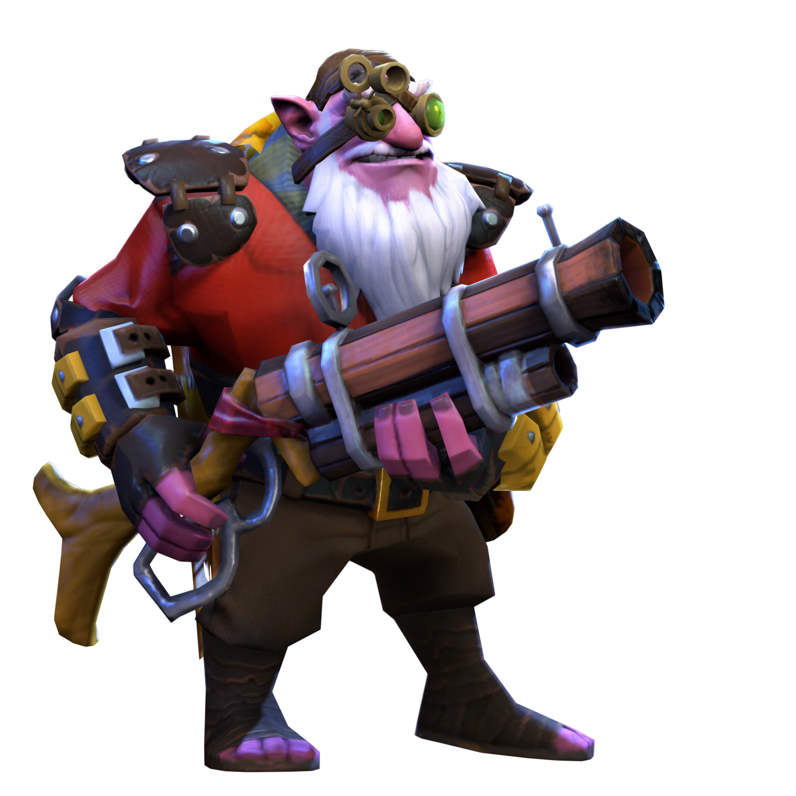
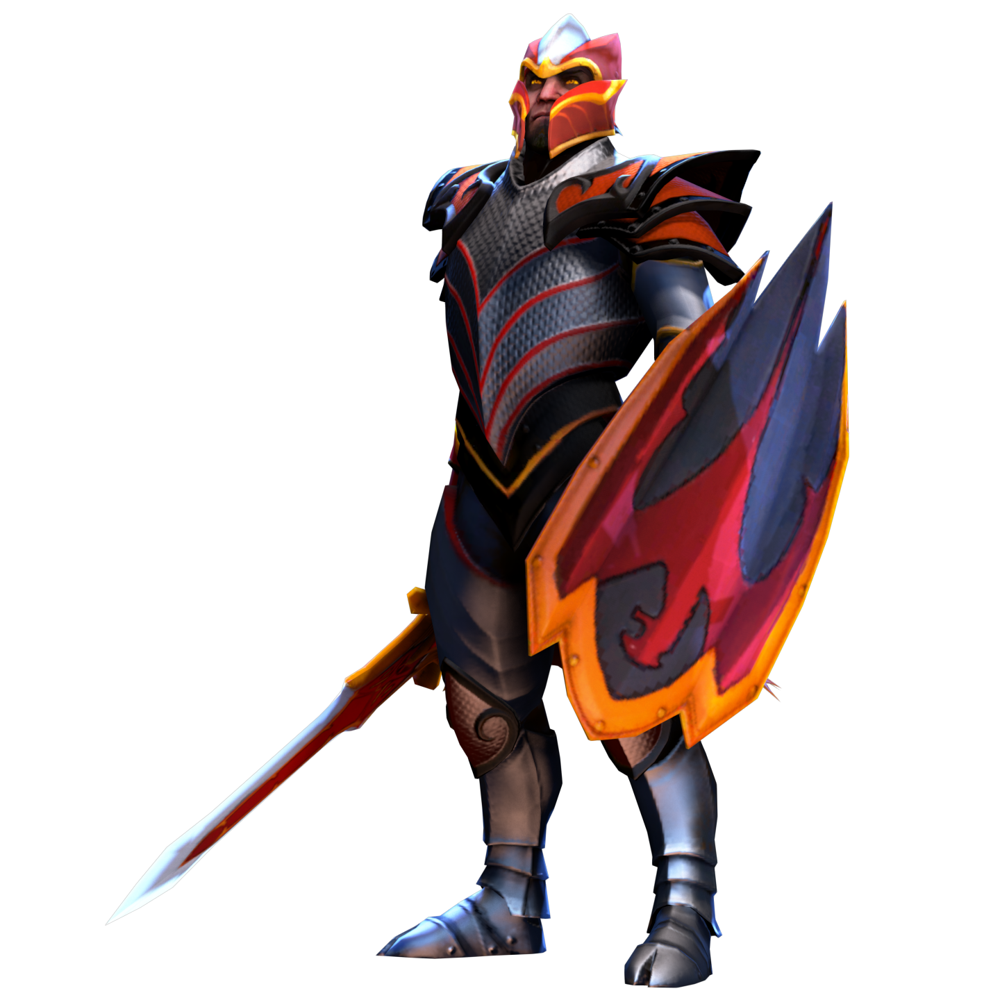

Dota 2 to jedna z najpopularniejszych gier MOBA na świecie.


Carry: Główny zabójca, zyskuje moc w późnej fazie gry.
Support: Wspiera drużynę, kupuje przedmioty użytkowe.
Mid: Bohater środkowej linii, często ma duży wpływ na grę.
Offlaner: Odporna postać, która przeżywa trudne sytuacje.1. Pobierz Dota 2 z Steam.
2. Zagraj samouczek.
3. Spróbuj różnych ról, aby znaleźć swoją ulubioną.
Dota 2 to jedna z najbardziej skomplikowanych i wymagających gier MOBA na świecie.
Każdy mecz to unikalne wyzwanie, w którym kluczowe są strategia, współpraca oraz umiejętności mechaniczne.
Gra oferuje ponad 120 bohaterów, z których każdy ma swoje unikalne umiejętności, role i style gry.
Każdy bohater może być budowany na wiele różnych sposobów w zależności od aktualnej mety, kompozycji drużyny oraz indywidualnych preferencji gracza.
Warto również wspomnieć o scenie e-sportowej. Dota 2 jest jedną z najważniejszych gier w świecie e-sportu.
The International, czyli coroczny turniej organizowany przez Valve, posiada największą pulę nagród w historii gier komputerowych,
często przekraczającą kilkadziesiąt milionów dolarów. Wielkie turnieje przyciągają miliony widzów, a profesjonalni gracze
zdobywają sławę porównywalną do tradycyjnych sportowców.
Dota 2 to jednak nie tylko e-sport. To także społeczność milionów graczy, którzy codziennie rywalizują, uczą się i rozwijają swoje umiejętności.
Gra wymaga cierpliwości i determinacji, ale daje ogromną satysfakcję z każdego wygranego meczu,
każdej dobrze wykonanej akcji i każdego spektakularnego zwycięstwa.